𝐵𝒾𝑒𝓃𝓋𝑒𝓃𝒾𝒹𝑜, 𝒶𝓆𝓊í 𝑒𝓈𝓉𝒶 𝓂𝒾 𝒹𝒾𝒶𝓇𝒾𝑜 𝓅𝑒𝓇𝓈𝑜𝓃𝒶𝓁, 𝓅𝑜𝒹𝓇á𝓈 𝓈𝒶𝒷𝑒𝓇 𝓈𝑜𝒷𝓇𝑒 𝓂𝒾.
Un viaje por mis pensamientos, recuerdos y quien soy.
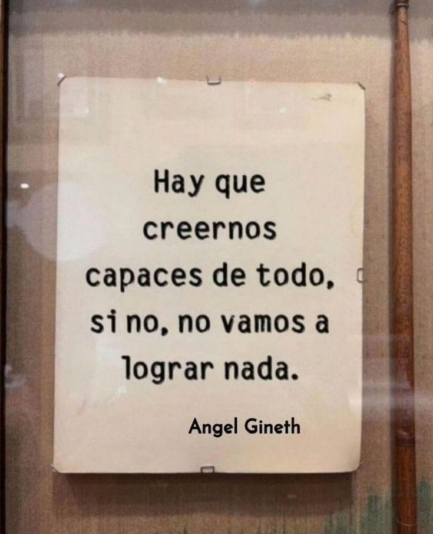¡Hola a todos! Este es el comienzo de mi diario. Aquí compartiré un poco sobre mí, mis pasiones y lo que me inspira.
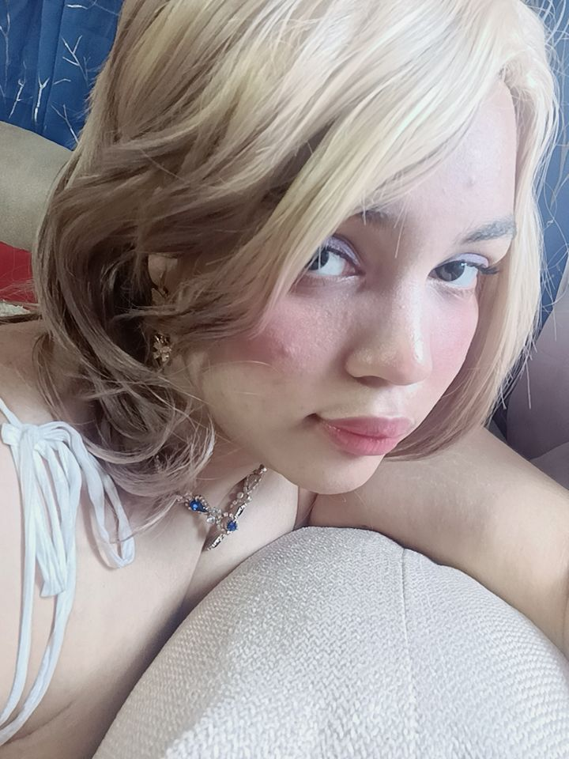Esa de ahi soy yo, mi nombre es Wildania!
Tengo 19 años y naci el 7 de julio del 2006.
Soy alguien muy artistica, Amo componer, crear, pintar, cantar, bailar, para mi el arte es mucho mas que simple estetica, es mi forma de vivir.
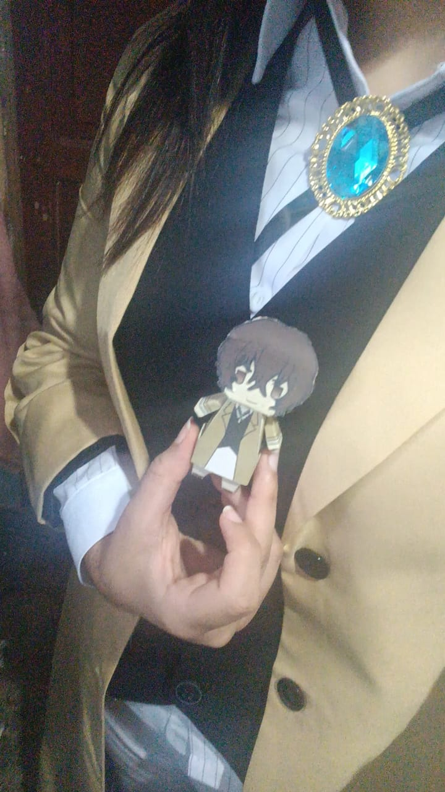No solamente me gusta todo lo relacionado con el arte, disfruto mucho de los videojuegos, el cosplay y principalmente la literatura
Mis sueños son grandes y mis metas aún más. Siempre estoy trabajando para ser la mejor versión de mí misma.
Fiódor Dostoievski: "El secreto de la existencia no consiste solamente en vivir, sino en saber para qué se vive"
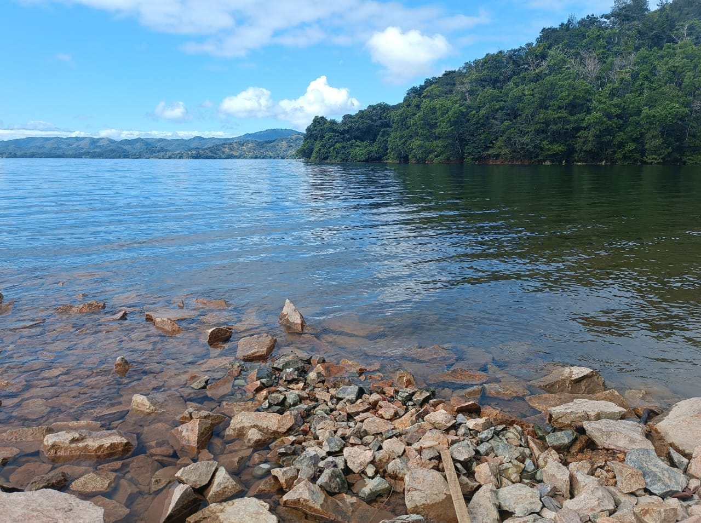Explorando fuentes de creatividad que moldean mi mundo y mi visión artística. Cada día es una oportunidad para aprender algo nuevo y dejar que la imaginación vuele.
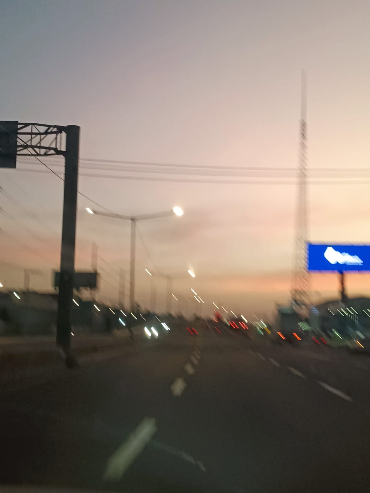Mi imaginacion, la lectura y los viajes es lo que principalmente estimula mi vision artistica.
Encuentro calma en la naturaleza, mi familia, mis amigos y en los pequeños detalles de la vida. Estos instantes son vitales para recargar energías y mantener el equilibrio.
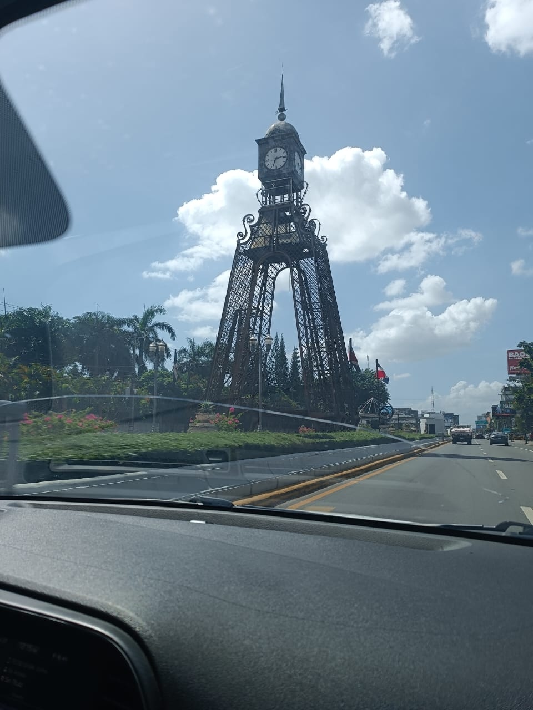Actualmente, estoy bastante apegada a un personaje ficticio. ¡Idia Shroud de Twisted Wonderland!
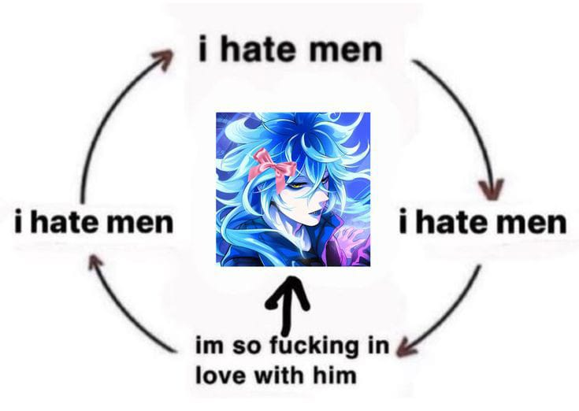Sumérgete en el mundo de la literatura conmigo. Aquí algunos de los libros que han dejado una huella en mi vida y pensamiento.
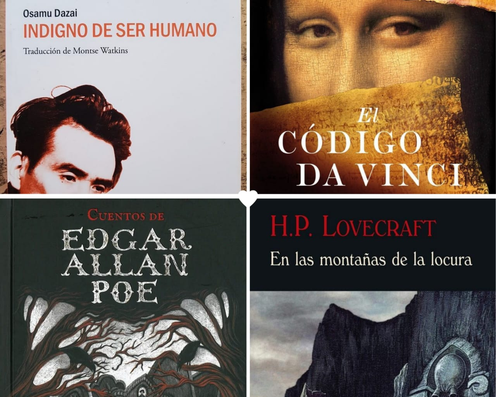Cada viaje es una nueva historia. Explorando diferentes culturas y paisajes que inspiran mi arte y mi alma.
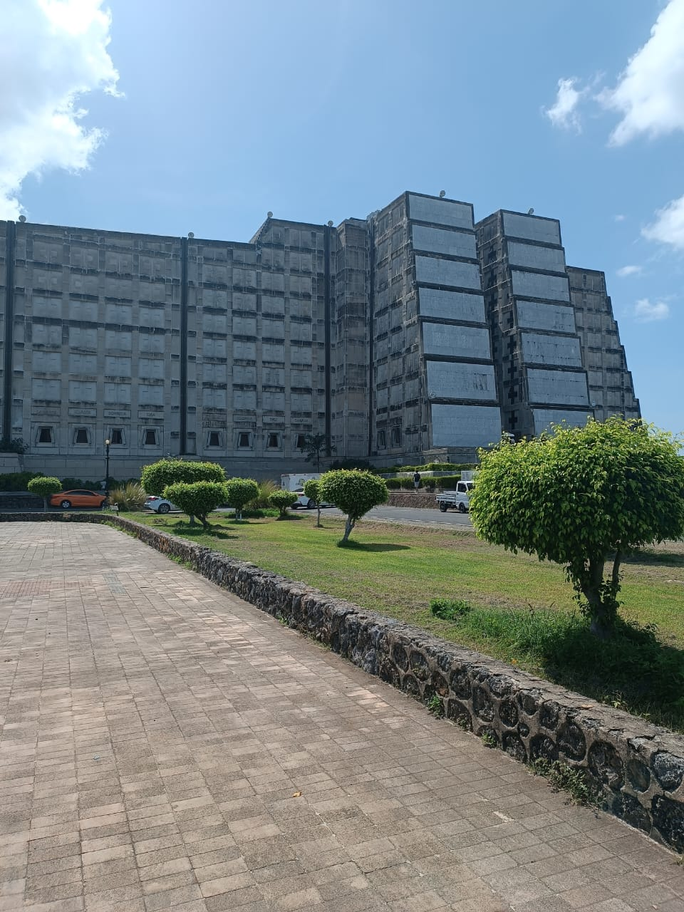Siempre en busca de nuevos conocimientos y habilidades. La curiosidad es el motor que impulsa mi crecimiento personal y artístico.
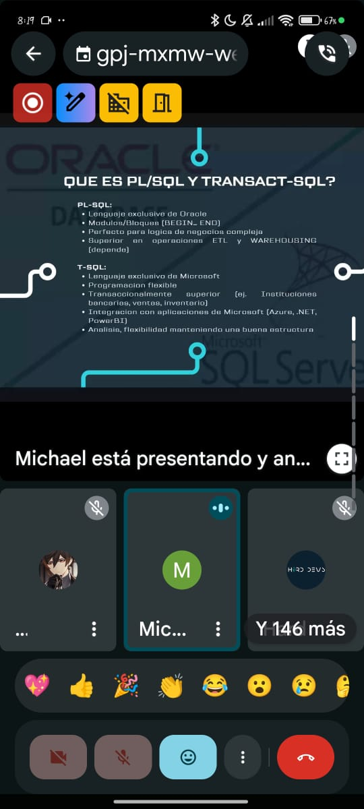Un vistazo a mi rincón de trabajo, donde las ideas toman forma y la creatividad fluye libremente.
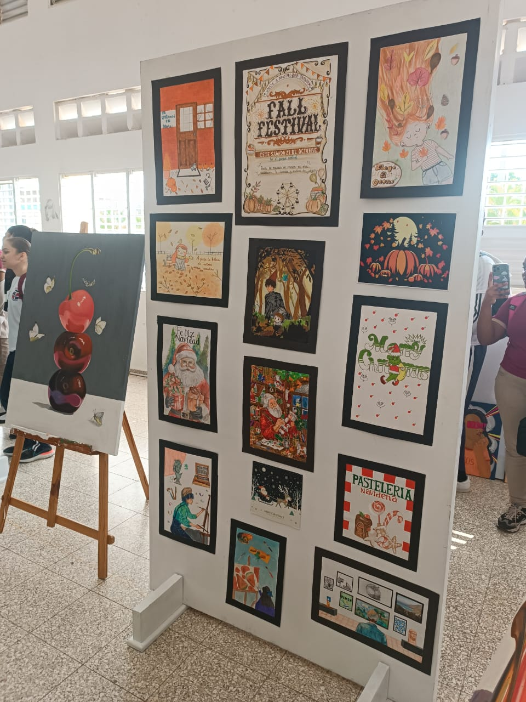Esto fue la presentacion de arte de los chicos y chicas de mi antiguo Liceo.
Un momento para mirar imagenes que nada que ver. Pero que me representan en espiritu.
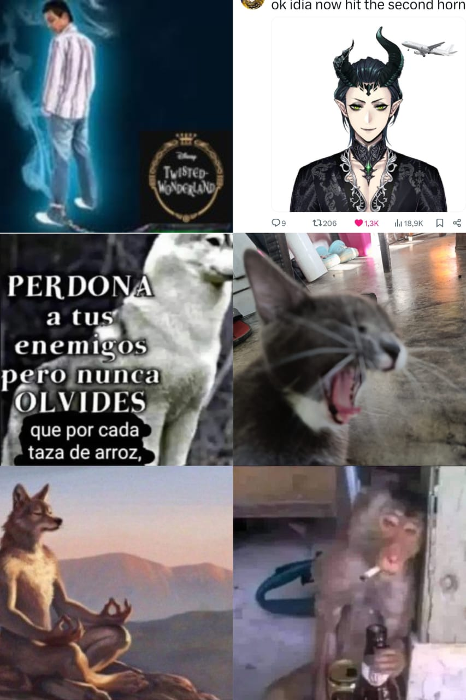Mirando al futuro con entusiasmo, planeando nuevas metas y proyectos para seguir evolucionando.
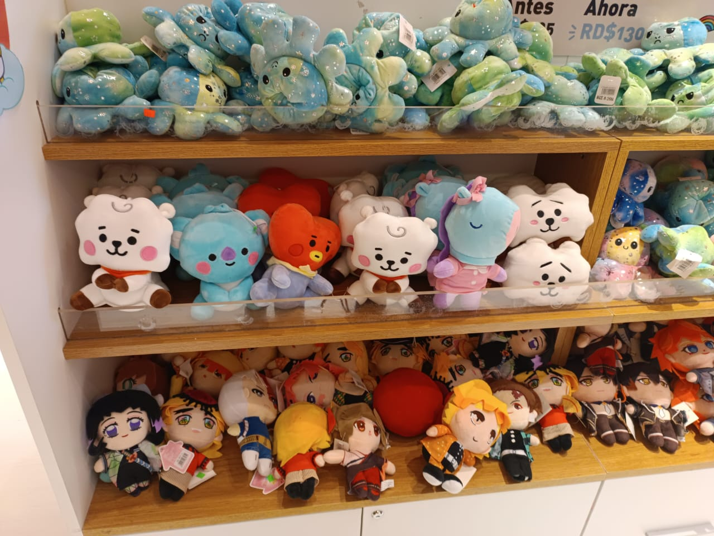Seguire explorando y siendo yo, con el apoyo de mi familia, amigos y Dios.
Gracias por leer.
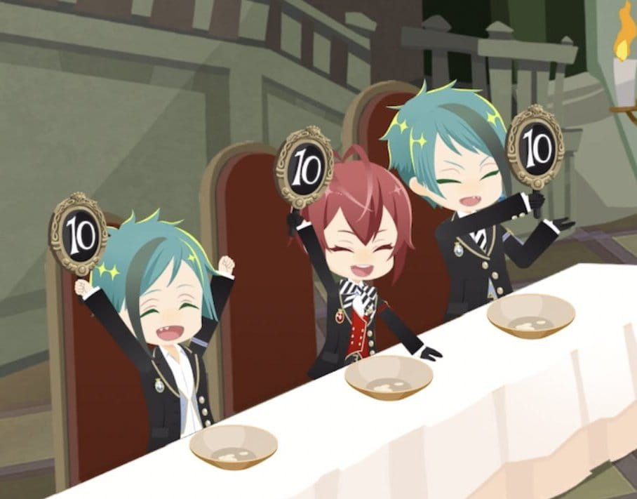